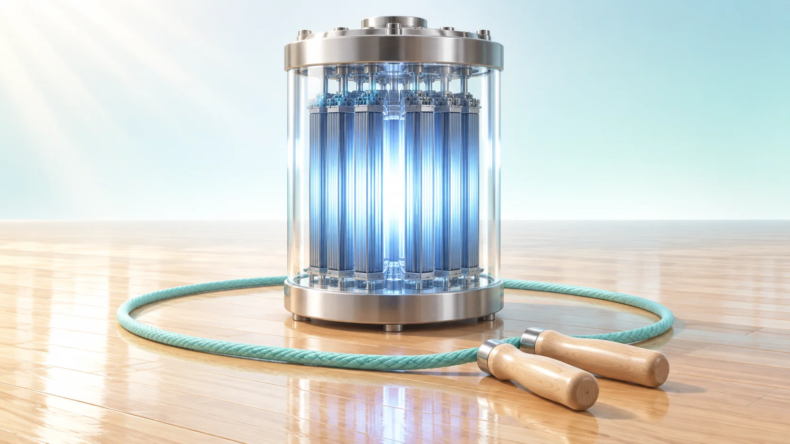
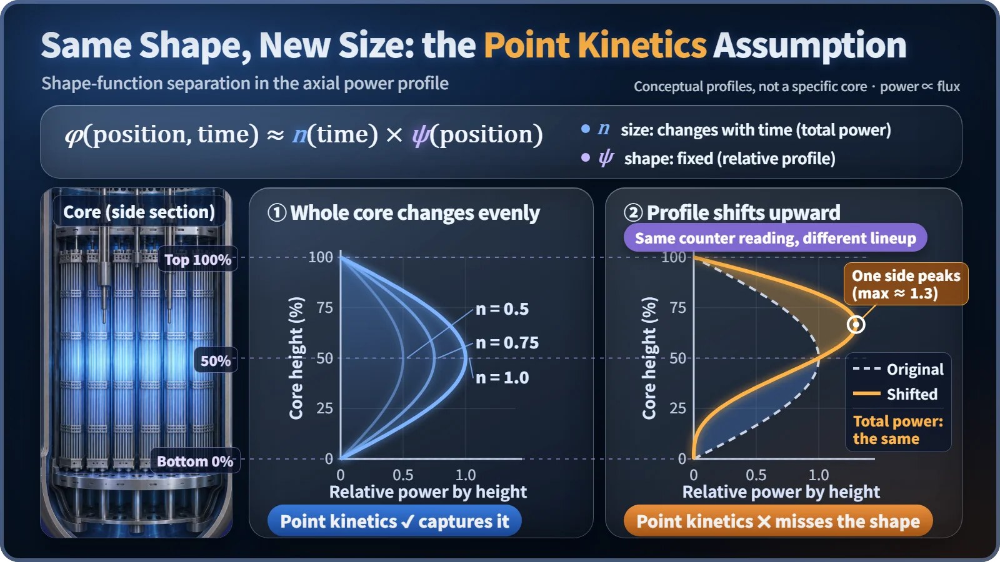
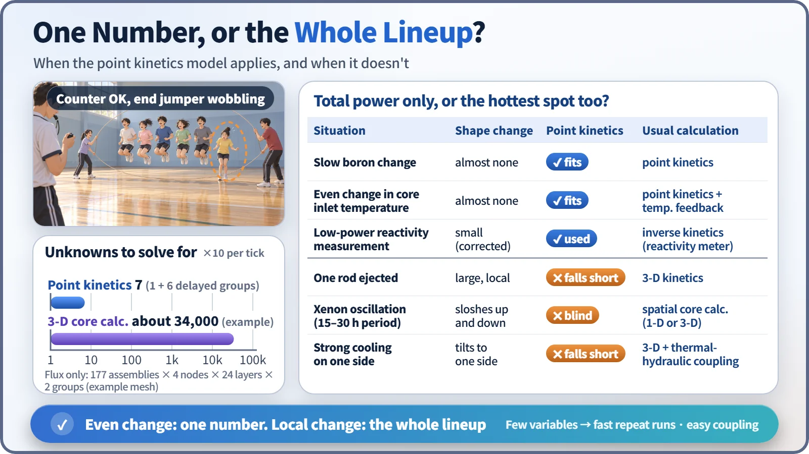

Modeling, Simulation & Computation · 253
The Referee Who Only Counts the Jumps — Strengths and Limits of the Point Kinetics Model
Point kinetics freezes the shape of the core's neutron distribution and tracks only its size: a gift for even changes, a blind spot for local ones.

The point kinetics model freezes the shape of the neutron distribution in the core and tracks only its size over time. That makes it fast, intuitive and easy to couple with other codes, but it is blind to events that change the shape, such as a control rod ejection or a xenon spatial oscillation. [1]
A report that is right and still dangerous
Imagine an analysis report: "We calculated a hypothetical accident in which one control rod is suddenly ejected. The average power of the whole core rose briefly and then settled down. Therefore, no problem."
The calculation may be correct, but the conclusion is dangerously hasty. Power may have shot up only around the spot where the rod came out. The average can look fine while the margin at the single hottest spot has run out, and the model in this report could never see that spot. That model is the point kinetics model, and it is still one of the most widely used calculation tools in the nuclear industry. The real question is when to trust it.
The referee at the long-rope jump
At a school sports day, ten people jump a long rope together, and the referee counts exactly one thing: how many jumps so far. While everyone jumps in rhythm, that number is enough; the lineup stays as it started. But if the person at the far end loses the rhythm, the counter keeps ticking while the trouble has already begun in one spot. Then you must look at the whole lineup.
Point kinetics is this referee. It freezes the lineup (where the neutrons are, and how many) in its initial shape and counts only how the overall size grows and shrinks.
One line of assumption
Neutron flux φ(position, time) ≈ n(time) × ψ(position)
Neutron flux measures how actively neutrons move around at a spot. n is the size that changes with time (proportional to total core power); ψ is the relative shape from place to place, assumed not to change. The shape need not be flat; it just has to stay the same. [2]

With space folded away, what remains is the power size n and six groups of delayed neutron precursors. Delayed neutrons are released later, when certain fission fragments decay; their half-lives range from about 0.2 to 56 seconds, so they are handled in six groups. The result: a set of equations with just 7 unknowns.
The benefits of counting one number
It's fast. A three-dimensional core calculation divides the core into thousands of cells and solves for the flux in each, so the unknowns run into the tens of thousands. Point kinetics has 7, which is what lets engineers rerun the same event hundreds of times.
Cause and effect are visible. Put in reactivity (how far the core is from balance) and you see at once how fast power responds: leisurely when reactivity is much smaller than the delayed neutron fraction, steeply as it approaches that value.
It plugs into other codes. System analysis codes that compute water and steam flow through the whole cooling system often need the core only as a power source, so point kinetics serves as their core power module. It has long been used in operator training simulators for real-time speed, although more simulators now run 3-D core models in real time. [3]
Run backwards, it measures. After every refueling, low-power tests use a reactivity meter that feeds the neutron signal from detectors outside the core backwards into the point kinetics equations to calculate reactivity in real time. [4]
The moments one number can't see
The limits come down to events that change the shape:
- Control rod ejection: power jumps only around the ejected rod, and the average misses the hottest spot. [5]
- Xenon spatial oscillation: in a large core, the power distribution sloshes between top and bottom with a period of roughly 15–30 hours while total power barely changes. [6]
- One-sided cooling: strong cooling on one loop raises reactivity on that side and tilts the distribution.
Just as the ends of a longer rope move out of step more easily, the bigger the core, the more loosely its regions are coupled and the larger these spatial effects become.
When to trust the referee, when to watch the lineup

If a change spreads evenly across the core, such as a slow boron change, an even change in core inlet temperature, or a rod bank moving slowly and symmetrically, trust point kinetics. If only one spot changes, or you need the margin at the hottest spot, move to a three-dimensional calculation. In practice both are used: point kinetics sweeps the overall trend, and only the tight cases are checked with 3-D calculations coupled to coolant flow. Point kinetics is sometimes fed correction values from 3-D runs, too.
So is this model outdated?
"Point kinetics is old, so it's wrong" is only half right: it is a tool with a defined range of use, accurate enough and overwhelmingly fast within it. "3-D is always better" misses the point too: more detail costs far more input data and computing time. A good analyst picks the resolution that fits the question.
Key takeaways
Point kinetics fixes the shape and calculates only the size. It wins on speed, its 7 variables, intuition and easy coupling; it fails on shape-changing events. Even changes: point kinetics. Local changes: three-dimensional calculations.